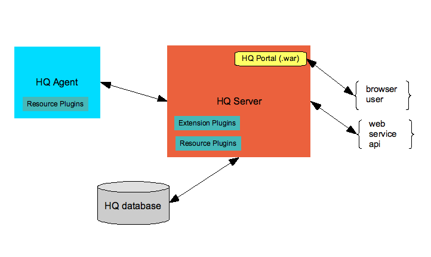

Introduction to Hyperic
Hyperic's web infrastructure monitoring and management software automates and streamlines data center operations. Hyperic helps you reduce operations workload, increase your company's IT management maturity level, and drive improvements in availability and infrastructure health.
Hyperic offers two versions of its flagship product:
- Hyperic HQ - Hyperic's open source offering is licensed under GNU GPL v2.
- vFabric Hyperic - Hyperic's industrial strength enterprise offering has all the capabilities of the open source version, plus advanced automation and control features for managing web applications at scale. vFabric Hyperic is available as a free trial for download from Hyperic under a Commercial License. The enterprise trial is limited to 50 managed platforms, and typically expires within 30 to 45 days.
Hyperic Functionality in a Nutshell
Hyperic provides these core management functions for your software and network resources:
- Discover - Hyperic Agents that run on the machines in your environment automatically detect, or auto-discover, the software resources running on the machine. When Hyperic discovers a software resource, it collects key facts about it, including its type, vendor, version, and location. In addition, Hyperic determines a variety of type-specific information; for example, a platform's architecture, RAM, CPU speed, IP address, and domain name. Out-of-the-box, Hyperic can auto-discover a large range of software resources. You can build your own resource plugins to manage software Hyperic doesn't support, and take advantage of resource plugins contributed by the Hyperic community.
- Organize - The software resources that Hyperic Agents discover are stored in the Hyperic database according to a hierarchical inventory model. The inventory model is fundamental to how Hyperic makes sense of a large number of software resources and the relationships among them - it is key to Hyperic's ability to present information about software resources components in a useful way.
- Monitor - Hyperic Agents collect metrics that reflect availability, performance, utilization, and throughput. For each supported resource type, Hyperic collects a standard set of metrics. You can tailor metric collection from the Hyperic Portal. You can select which metrics you want to collect, and choose which metrics to spotlight in the Dashboard.
- Control - You can use Hyperic for remote control and administration of your software resources. Available control actions vary by resource type. For instance, for an application server, you can do tasks like starting, stopping, and garbage collection. For a database server, you can perform analysis or housekeeping functions.
- Alert, notify, escalate - You can set alerts on metrics and configure actions for Hyperic to perform when an alert fires. When an alert fires, Hyperic can respond in a variety of ways: it can issue email notifications, set SNMP traps, perform a control action, or issue a communication to another management system. You can define a sequence of responses to a fired alert--
an escalation scheme--to ensure that problems don't fall through a crack.
- Present, visualize, analyze - The Hyperic Portal is a highly configurable user interface for monitoring and analyzing performance and availability. The portal's Dashboard is made up of portlets - you can add, remove, and rearrange them, and configure the details of portlet behavior. For example, you can configure the "Availability Summary" portlet to give visibility your most critical resources, or configure the "Saved Charts" portlet to present a slideshow of graphic displays of key resources' critical indicators.
Key Facts about the Hyperic Architecture
This diagram is a simple illustration of the key HQ components and how they fit together. The diagram doesn't reflect a real-world deployment, as it shows only a single HQ Agent. In a typical deployment, there are many agents - one on every machine you manage with HQ.

Hyperic Agent
You run an Hyperic Agent on each machine you want to manage with Hyperic. Agents auto-discover the software components running on the machine, and periodically re-scan the platform for changes in its configuration. Hyperic Agents gather performance and availability metrics, perform log and event tracking, and allow you to perform control functions, like starting and stopping servers. Agents send the inventory and performance data they collect to a central Hyperic Server.
Hyperic Server and Hyperic Database
The Hyperic Server receives inventory and metric data from Hyperic Agents and stores it in the Hyperic database. The server provides facilities for managing your software inventory - it implements the Hyperic inventory and access model, which allows you group your software assets in useful ways that ease the process of monitoring and management. The Hyperic Server detects when alerts fire, and performs the notifications or escalation processes you define. It also processes actions that you initiate using the Hyperic Portal or Hyperic's web services API. It also provides authentication services, using an internal engine or an external authentication service.
Hyperic Portal
The Hyperic Portal is a highly customizable graphical user interface to the Hyperic Server. The home page of the portal is the Hyperic Dashboard, which contains configurable portlets, providing a one page overview of software inventory changes, problem components, and metric charts for important resources. Beyond the Dashboard are tabbed views for browsing inventory, viewing and visualizing metrics, and managing your monitoring and alerting logic.
{kind=link}
These are the components of the Dashboard:
- Masthead - This horizontal bar appears at the top of most pages. It has links for navigating to key portal pages, recently fired Alerts, screencasts, and help.
- Search Resources portlet - After you have resources in inventory, this portlet allows you to search for them.
- Saved Charts portlet - After you have resources in inventory, you can save charts of interest to the Dashboard. Charts you add will be displayed as a repeating slideshow.
- Recently Added portlet - This portlet lists resources that have been added to Hyperic inventory within the last 48 hours.
- Availability Summary portlet - After you have resources in inventory, you can configure this portlet to display availability for a selected set of resources.
- Auto-Discovery portlet - This portlet lists the platforms and the servers that have been discovered but not yet added by to inventory. Shortly after you start the Hyperic Agent and open the Dashboard for the first time, the resources the agent discovered will appear here.
- Favorite Resources portlet - You can add resources that you want to access frequently to this portlet.
- Recent Alerts portlet - This portlet provides lists alerts that have recently fired for selected resources.
- Control Actions portlet - This portlet lists control actions the Hyperic has performed recently.
- Summary Counts portlet - You can add this portlet to the left side of the Dashboard. If you do, it will show the number of resources of each inventory type - platforms, servers, etc. - that you have permission to view. (Available, but not shown by default on the the Dashboard).
- Metric Viewer portlet - This portlet displays a selected metric for selected resources. (Available, but not shown by default on the the Dashboard).
- Problem Resources portlet - This portlet will list all resources with problem Metrics, and useful information about their availability and health. (Available, but not shown by default on the the Dashboard).
HQ Web Services API
Hyperic's web services API provides programmatic access to all HQ Server data and functionality.
Plugins
You can extend Hyperic's capabilities with two types of plugins:
- The Hyperic Agent uses resource plugins to discover, collect metrics, and perform control actions on software resources. Hyperic has a large number of built-in resource plugins. You can also build your own resource plugins, or use community-contributed ones for managing resource types that Hyperic doesn't support off-the-shelf.
- To can develop HQU Plugins to extend the Hyperic user interface, develop scripts for automating commonly performed processes, and develop web services interfaces with other management systems.
{kind=link}
{kind=link}